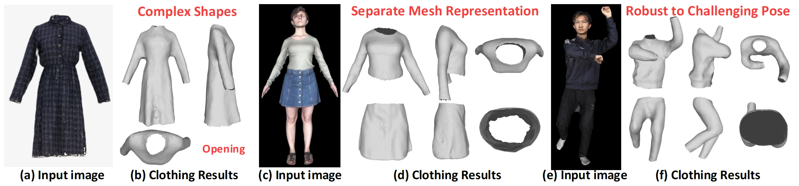

IEEE Transactions on Visualization and Computer Graphics (TVCG), Under Reviwer, 2023
Single-view clothing reconstruction usually relies on topologically fixed clothing templates to reduce the problem complexity, but this strategy also makes the reconstructed clothing shape contours simple and lack diversity. In this paper, we propose a novel clothing reconstruction method to generate complex shape contours and open clothing mesh from a single image. At the heart of our work is an implicit unsigned distance field condition on clothing-oriented and pose-stable spatial shape features to represent the clothing from the image. This feature can provide spatially aligned clothing shape priors to improve the pose robustness. It is based on a type-generic clothing template derived from the mainstream clothing generative model to aviod tedious template design and switching. To output open clothing mesh results from noisy clothing unsigned distance fields, we develop a two-stage clothing mesh extraction method. It takes the point clouds as an intermediate representation and produces smooth, plausible and editable clothing mesh results. To provide effective supervision, we construct a pose-rich and shape-complete clothing scan dataset by enhancing clothing pose diversity and complementing missing clothing geometry caused by occlusion. Extensive experiments demonstrate that our method achieves state-of-the-art levels. More importantly, we provide a simple but effective, and low-cost way to reconstruct complex shape contours clothing from a single image.

Fig 1. Our Clothing Reconstruction Results.
Xinqi Liu, Jituo Li, Guodong Lu. "Reconstructing Complex Shaped Clothing from a Single Image with Feature Stable Unsigned Distance Fields". IEEE TVCG 2024.
@InProceedings{Liu2023ComplexCloth,
author = {Xinqi Liu, Jituo Li, and Guodong Lu},
title = {Reconstructing Complex Shaped Clothing from a Single Image with Feature Stable Unsigned Distance Fields},
booktitle = {IEEE Transactions on Visualization and Computer Graphics (TVCG)},
year={2024},
publisher={IEEE},
}